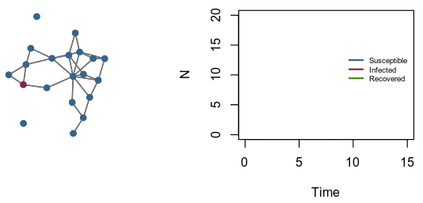

Disease transmission dynamics
Mathematical models of infectious diseases -computer simulation of epidemics- enable researchers to study their transmission dynamics, to predict the potential population-level impact of interventions, and to optimize prevention/control programs. So far, my work as mainly focused on HIV and other STBBIs.
- Dynamics of HIV transmission among MSM in Québec.
- Elimination of HCV among HIV coinfected populations in Canada.
- Impact of targetted HIV treatment-as-prevention scenarios in Côte d’Ivoire.
- Cervical cancer elimination in high HIV prevalence settings through cancer screening and HPV vaccination.

Epidemiology and measurements
Measurements of population health and its determinants is a key step to benchmark, monitor progress, and devise appropriate health policies. I use models to analyze and pool complex surveys for diverse health outcomes/indicators.
- Integrative Systems Modeling to estimate UNAIDS’ first 90 (proportion of people living with HIV aware of their status) in sub-Saharan Africa.
- Bayesian latent class model to ascertain the impact of imperfect immunoassays on HIV prevalence estimates.
- Bias assessment of routine HIV testing data from pregnant women at antenatal care.
- Global, regional, and national estimates of violence against women statistics.
Impact and economic evaluations
By comprehensively assessing the effects - intended and unintended - of a health program, impact evaluations can generate new evidence, promote accountability, and prioritize public health actions. Combined with complimentary cost-effectiveness analyses, impact evaluation can help policy-makers chose those interventions that provides the biggest bang for the buck.
- Cost-effectiveness of accelerated HIV response scenarios in Côte d’Ivoire.
- Model-based impact evaluation of pre-exposure prophylaxis to reduce HIV transmission amogn men who have sex with men in Montréal.
- Potential impact and cost-effectiveness of prison-based interventions on HCV transmission among people who inject drugs.
- Impact of scaling-up HIV self-testing on HIV transmission in Côte d’Ivoire, Mali, and Sénégal.